UFC
PRINCIPAIS LUTADORES
Conheça os Principais Lutadores da História do UFC!!!.
MAIORES LENDAS
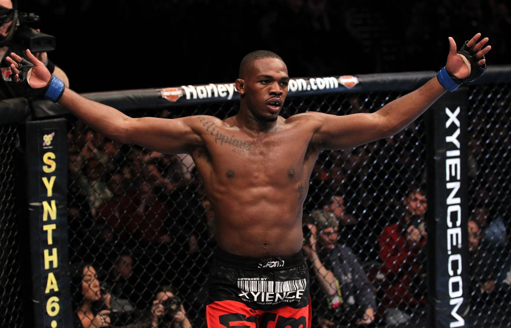
JON JONES
Considerado por muitos o maior lutador de MMA de todos os tempos, Jon Jones marcou a história do UFC com seu talento, inteligência e domínio dentro do octógono. Conhecido pelo alto QI de luta e pela versatilidade, Jones conquistou o cinturão dos meio-pesados ainda muito jovem e acumulou vitórias sobre grandes nomes do esporte. Com um estilo imprevisível e uma carreira cheia de momentos históricos, ele se tornou uma das figuras mais icônicas da história do MMA.
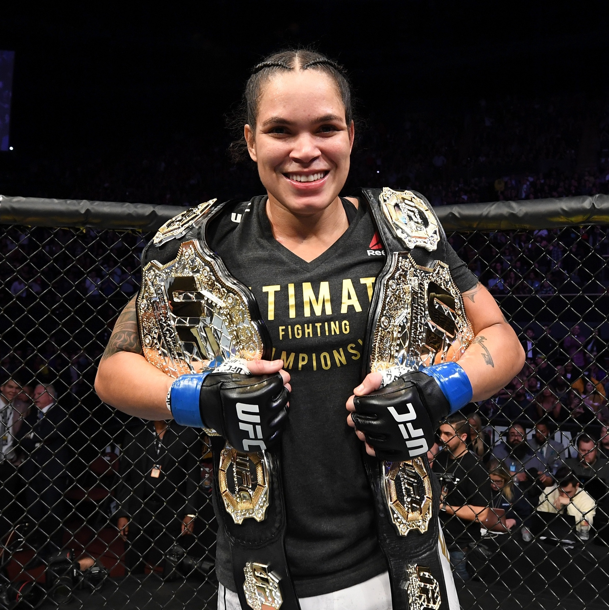
AMANDA NUNES
Amanda Nunes é considerada uma das maiores lutadoras da história do MMA. Conhecida como “A Leoa”, ela marcou época no UFC ao conquistar cinturões em duas categorias diferentes e derrotar grandes nomes do esporte. Com um estilo agressivo, poderoso e técnico, Amanda se destacou pela força nos golpes e pela confiança dentro do octógono, se tornando um dos maiores símbolos do MMA brasileiro no mundo.

ANDERSON SILVA
Anderson Silva é uma das maiores lendas da história do MMA e um dos atletas mais icônicos do UFC. Conhecido como “Spider”, ele ficou famoso pelo seu estilo único, movimentação precisa e nocautes espetaculares. Anderson dominou a categoria dos médios por muitos anos, acumulando defesas de cinturão históricas e vitórias marcantes que ajudaram a popularizar o esporte no mundo inteiro. Seu legado transformou o MMA e inspirou gerações de lutadores brasileiros.

GEORGES ST-PIERRE
Georges St-Pierre, conhecido como “GSP”, é considerado um dos lutadores mais completos da história do MMA. Ídolo do UFC, ele dominou a divisão dos meio-médios com uma combinação impressionante de técnica, estratégia e disciplina. Dono de um wrestling extremamente eficiente e um jogo equilibrado em todas as áreas da luta, St-Pierre construiu uma carreira marcada por grandes vitórias e respeito dentro e fora do octógono.

JOSÉ ALDO
José Aldo é uma das maiores lendas do MMA brasileiro e um dos melhores pesos-pena da história do UFC. Conhecido pela velocidade, defesa de quedas impressionante e chutes poderosos, Aldo dominou sua categoria por muitos anos com performances memoráveis. Seu talento, disciplina e trajetória de superação fizeram dele um dos nomes mais respeitados do esporte mundial.
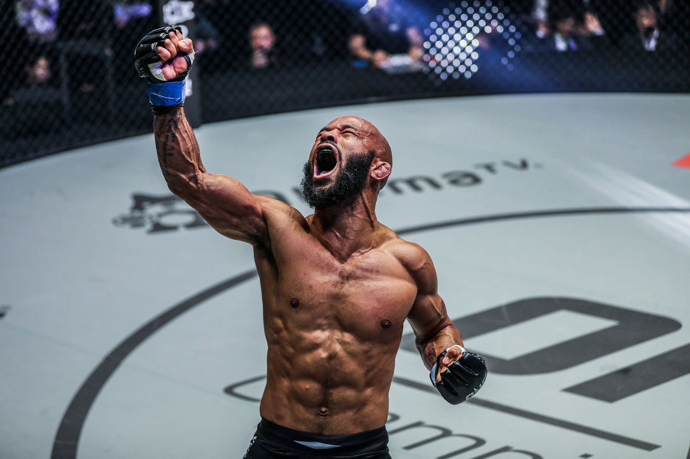
DEMETRIOUS JONHSON
Demetrious Johnson, conhecido como “Mighty Mouse”, é considerado um dos lutadores mais técnicos e habilidosos da história do MMA. Ex-campeão peso-mosca do UFC, ele ficou famoso pela velocidade, inteligência e criatividade dentro do octógono. Com um estilo completo e extremamente preciso, Demetrious dominou sua categoria por anos e protagonizou algumas das performances mais impressionantes já vistas no esporte.
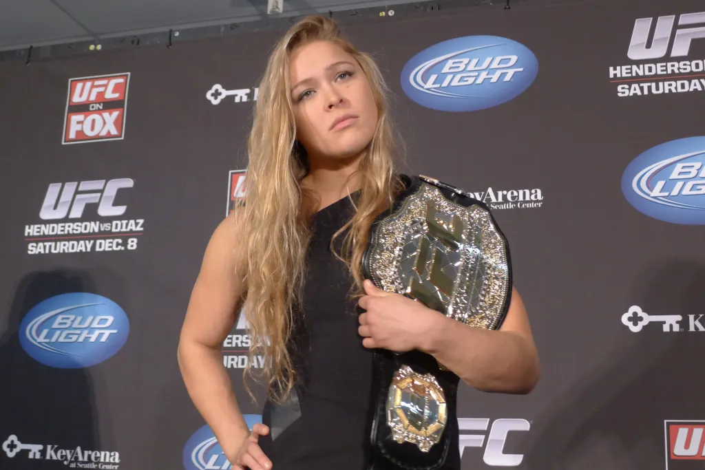
RONDA ROUSEY
Ronda Rousey foi uma das responsáveis por revolucionar o MMA feminino no mundo. Ex-campeã do UFC, ela ganhou fama pelo seu judô de alto nível e pelas vitórias rápidas através de finalizações impressionantes. Com grande carisma e impacto fora do octógono, Ronda ajudou a popularizar o esporte entre o público mundial e se tornou uma das atletas mais marcantes da história do MMA.

KHABIB NURMAGOMEDOV
Khabib Nurmagomedov é considerado um dos lutadores mais dominantes da história do MMA. Ex-campeão peso-leve do UFC, Khabib ficou conhecido pelo wrestling extremamente eficiente, pressão constante e controle absoluto sobre os adversários. Invicto em sua carreira profissional, ele construiu um legado marcado por disciplina, resistência e performances históricas dentro do octógono.

CRIS CYBORG
Cris Cyborg é uma das lutadoras mais dominantes da história do MMA feminino. Conhecida pela força, agressividade e poder de nocaute, ela construiu uma carreira marcada por grandes vitórias em diferentes organizações ao redor do mundo. Com um estilo intenso e ofensivo, Cyborg se tornou referência no esporte e uma das atletas brasileiras mais respeitadas no MMA.

VALENTINA SHEVCHENKO
Valentina Shevchenko é uma das lutadoras mais técnicas e dominantes da história do MMA feminino. Conhecida pela precisão nos golpes, alto nível no kickboxing e inteligência dentro do octógono, ela marcou época como campeã peso-mosca do UFC. Com performances consistentes e um estilo extremamente completo, Valentina se consolidou como uma das maiores atletas do esporte.
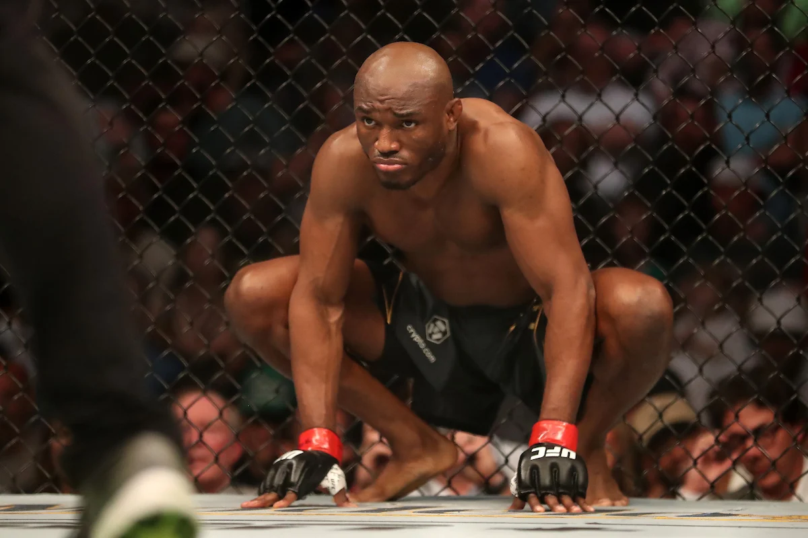
KAMARU USMAN
Kamaru Usman é um dos maiores nomes da divisão dos meio-médios do UFC. Conhecido pela força física, wrestling dominante e resistência impressionante, Usman construiu uma trajetória marcada por grandes vitórias e atuações consistentes. Com um estilo estratégico e poderoso, ele se consolidou como um dos lutadores mais respeitados e dominantes de sua geração no MMA.
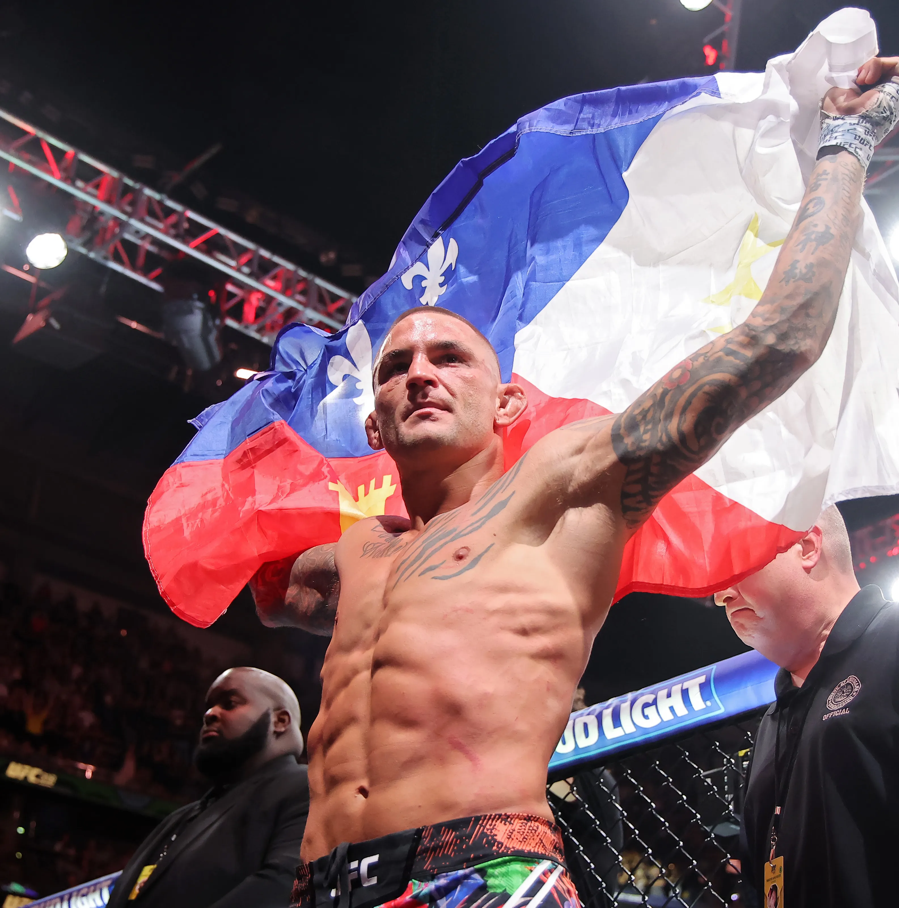
JUSTIN POIRIER
Dustin Poirier é um dos lutadores mais queridos e respeitados do MMA moderno. Conhecido pelo coração guerreiro, trocação agressiva e resistência impressionante, Poirier protagonizou algumas das lutas mais emocionantes da história do UFC. Com vitórias marcantes sobre grandes nomes do esporte, ele construiu uma carreira baseada em superação, experiência e muita determinação dentro do octógono.
ATUAIS ASTROS

ALEX PEREIRA
Alex Pereira, conhecido como “Poatan”, é um dos lutadores mais perigosos e explosivos do MMA atual. Ex-campeão do UFC em diferentes categorias, ele ganhou destaque mundial pelo poder devastador dos nocautes e pelo alto nível no kickboxing. Com precisão nos golpes e uma presença intimidadora no octógono, Alex se tornou um dos maiores representantes do MMA brasileiro na nova geração.

JUSTIN GAETHJE
Justin Gaethje é conhecido por protagonizar algumas das lutas mais violentas e emocionantes do UFC. Dono de um estilo agressivo e ofensivo, Gaethje conquistou fãs ao redor do mundo pela trocação intensa, resistência e poder de nocaute. Com uma mentalidade de guerreiro e performances sempre eletrizantes, ele se tornou um dos nomes mais populares da divisão dos leves no MMA.

MERAB DVALISHVILI
Merab Dvalishvili é um dos lutadores mais intensos e incansáveis do UFC. Conhecido pelo cardio impressionante, ritmo acelerado e wrestling dominante, Merab se destacou na divisão dos galos por pressionar os adversários do início ao fim da luta. Sua determinação, resistência e estilo agressivo o transformaram em um dos competidores mais perigosos da categoria.

CONOR MCGREGOR
Conor McGregor é um dos maiores fenômenos da história do MMA e uma das figuras mais populares do UFC. Conhecido pelo carisma, confiança e poder de nocaute, McGregor conquistou cinturões em duas categorias diferentes e revolucionou o esporte com sua personalidade marcante dentro e fora do octógono. Seu estilo agressivo e suas lutas históricas ajudaram a levar o MMA a um novo nível de popularidade mundial.

CHARLES OLIVEIRA
Charles Oliveira, conhecido como “Do Bronx”, é um dos maiores finalizadores da história do UFC. Dono de um jiu-jitsu de elite e uma trocação cada vez mais agressiva, Charles conquistou fãs ao redor do mundo com seu estilo emocionante e sua trajetória de superação. Ex-campeão peso-leve, ele se tornou um dos maiores representantes do MMA brasileiro com performances marcantes e vitórias históricas no octógono.

NATALIA SILVA
Natália Silva é uma das grandes promessas do MMA brasileiro no UFC. Conhecida pela velocidade, movimentação inteligente e precisão nos golpes, ela vem se destacando na divisão peso-mosca com performances técnicas e dominantes. Com talento, confiança e evolução constante, Natália conquistou espaço entre os principais nomes da categoria e representa a nova geração do MMA feminino brasileiro.

ARMAN TSARUKYAN
Arman Tsarukyan é um dos lutadores mais talentosos da nova geração do UFC. Conhecido pelo wrestling de alto nível, explosão física e grande versatilidade dentro do octógono, Arman vem se destacando na divisão dos leves com atuações dominantes contra adversários de elite. Sua combinação de técnica, agressividade e evolução constante o coloca entre os principais nomes do futuro do MMA.

KHAMZAT CHIMAEV
Khamzat Chimaev é um dos lutadores mais explosivos e dominantes da nova geração do UFC. Conhecido pela agressividade, força física e wrestling sufocante, Chimaev chamou atenção rapidamente com vitórias impressionantes e atuações dominantes no octógono. Com um estilo intenso e confiança elevada, ele se tornou um dos nomes mais temidos e comentados do MMA atual.

CIRYL GANE
Ciryl Gane é um dos pesos-pesados mais técnicos e habilidosos do MMA moderno. Conhecido pela movimentação leve, precisão nos golpes e alto nível no striking, Gane se destacou no UFC por unir velocidade e inteligência tática raras para a categoria. Com performances dominantes e um estilo elegante dentro do octógono, ele se consolidou entre os principais nomes dos pesos-pesados do esporte.
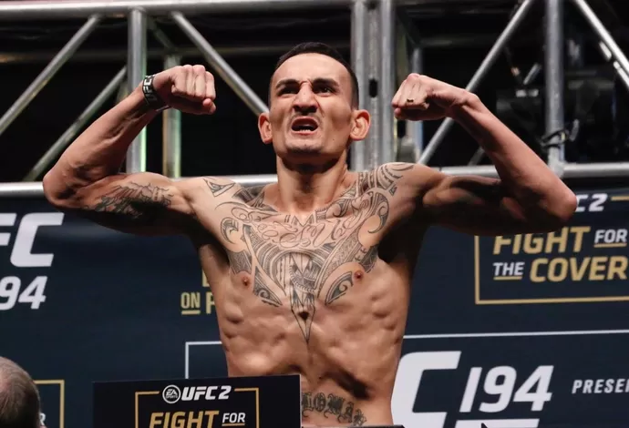
MAX HOLLOWAY
Max Holloway é um dos lutadores mais empolgantes e respeitados da história do UFC. Conhecido pelo volume impressionante de golpes, resistência e estilo agressivo, Holloway protagonizou batalhas memoráveis na divisão dos penas. Ex-campeão da categoria, ele conquistou fãs ao redor do mundo com sua durabilidade, carisma e performances cheias de ação dentro do octógono.

ALEXANDRE PANTOJA
Alexandre Pantoja é um dos principais nomes do MMA brasileiro na atualidade e campeão da divisão peso-mosca do UFC. Conhecido pela agressividade, resistência e alto nível no jiu-jitsu, Pantoja construiu sua trajetória com atuações intensas e vitórias marcantes contra adversários de elite. Seu estilo completo e determinação o colocaram entre os melhores lutadores da categoria no mundo.

ZHANG WEILI
Zhang Weili é uma das maiores estrelas do MMA feminino e uma das lutadoras mais dominantes do UFC. Conhecida pela força explosiva, resistência e versatilidade dentro do octógono, Weili conquistou o cinturão peso-palha com performances impressionantes. Seu estilo agressivo e técnico ajudou a expandir ainda mais a popularidade do MMA na Ásia e no mundo.
NOVAS PROMESSAS

CARLOS PRATES
Carlos Prates é um dos nomes brasileiros em ascensão no UFC e vem chamando atenção pelo seu striking afiado e poder de nocaute. Integrante da Fighting Nerds, Prates se destaca pela calma dentro do octógono, precisão nos golpes e estilo agressivo. Com performances impressionantes e grande potencial, ele é visto como uma das promessas do MMA brasileiro na nova geração.

MICHAEL MORALES
Michael Morales é uma das grandes promessas da divisão dos meio-médios do UFC. Conhecido pela combinação de força, velocidade e agressividade, Morales vem impressionando com atuações dominantes e nocautes marcantes. Seu estilo explosivo e confiança dentro do octógono o colocam como um dos jovens talentos mais promissores do MMA atual.

JEAN SILVA
Jean Silva é um dos talentos em ascensão do MMA brasileiro e vem ganhando destaque no UFC por seu estilo agressivo e poder de nocaute. Conhecido pela confiança, intensidade e trocação afiada, Jean conquistou fãs com performances empolgantes e muita pressão dentro do octógono. Seu carisma e atitude ofensiva fazem dele um dos nomes mais promissores da nova geração brasileira no MMA.

MAURICIO RUFFY
Maurício Ruffy é um dos nomes mais promissores da nova geração do MMA brasileiro. Integrante da equipe Fighting Nerds, Ruffy se destaca pela trocação técnica, movimentação rápida e criatividade nos ataques. Com um estilo agressivo e performances empolgantes, ele vem conquistando espaço no cenário internacional e chamando atenção como um dos talentos em ascensão do UFC.

ATEBA GUATIER
Ateba Gautier é um lutador em ascensão no cenário do MMA, conhecido pela força física, agressividade e estilo explosivo dentro do octógono. Com performances intensas e grande potencial atlético, Ateba vem chamando atenção como uma promessa da nova geração do esporte, buscando conquistar espaço entre os principais nomes do MMA internacional.
KEVIN VALERROS
Kevin Vallejos é um jovem talento do MMA sul-americano que vem ganhando destaque pela agressividade, velocidade e poder de nocaute. Conhecido por seu estilo ofensivo e confiança dentro do octógono, Vallejos é visto como uma das promessas da nova geração do esporte e busca crescer cada vez mais no cenário internacional do MMA.
LUTADORES CAMPEÕES

JOSHUA VAN
Joshua Van é uma das jovens promessas da divisão peso-mosca no MMA. Conhecido pela velocidade, agressividade e alto volume de golpes, Joshua vem conquistando destaque com performances empolgantes e grande confiança dentro do octógono. Seu estilo ofensivo e evolução constante fazem dele um nome promissor para o futuro do esporte.
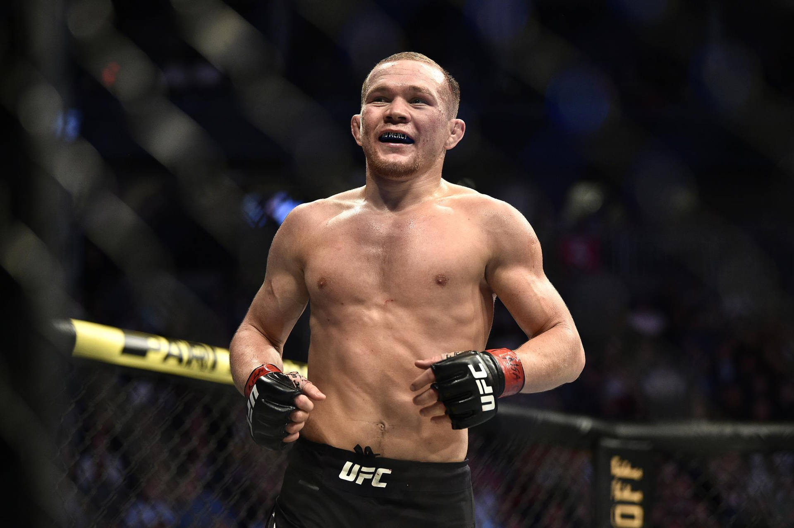
PETR YAN
Petr Yan é um dos lutadores mais técnicos e perigosos da divisão dos galos do UFC. Conhecido pela precisão na trocação, defesa sólida e pressão constante, Yan conquistou destaque mundial com performances dominantes e grande inteligência dentro do octógono. Seu estilo agressivo e disciplinado o consolidou como um dos principais nomes do MMA moderno.

ALEXANDER VOLKANOVSKI
Alexander Volkanovski é um dos maiores nomes da história da divisão dos penas do UFC. Conhecido pela inteligência de luta, cardio impressionante e versatilidade, ele dominou a categoria por anos com performances consistentes contra os melhores do mundo. Volkanovski se destaca pela capacidade de adaptação dentro do octógono e pelo alto nível técnico, sendo considerado um dos lutadores mais completos do MMA moderno.
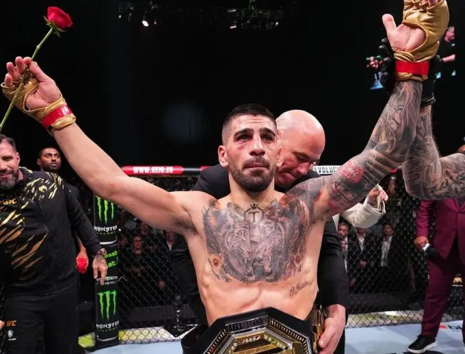
ILIA TOPURIA
Ilia Topuria é um dos nomes mais promissores e explosivos do UFC na atualidade. Conhecido pelo poder de nocaute, confiança e boxe afiado, Topuria vem se destacando na divisão dos penas com performances dominantes contra adversários de alto nível. Invicto e extremamente técnico, ele é visto como uma das grandes estrelas em ascensão do MMA mundial.
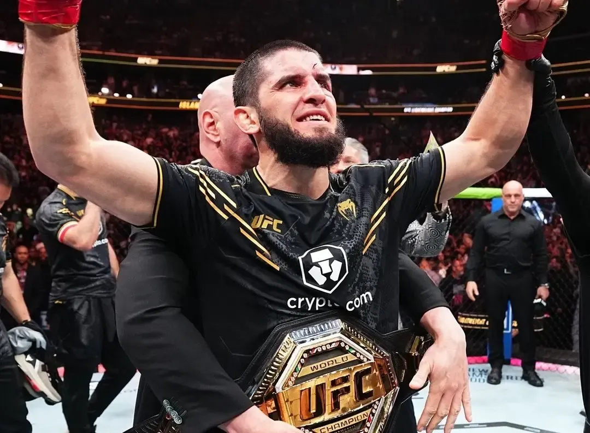
ISLAM MAKHACHEV
Islam Makhachev é um dos lutadores mais dominantes do MMA atual e campeão da divisão dos leves do UFC. Conhecido pelo grappling de elite, controle no chão e disciplina tática, ele construiu uma sequência impressionante de vitórias contra os melhores da categoria. Com um estilo eficiente e extremamente técnico, Makhachev se consolidou como um dos principais nomes do esporte na atualidade.

SEAN STRICKLAND
Sean Strickland é um dos lutadores mais controversos e ao mesmo tempo talentosos do UFC. Conhecido pelo estilo de boxe defensivo, pressão constante e postura provocadora, ele surpreendeu ao conquistar o cinturão dos médios. Dentro do octógono, Strickland se destaca pela consistência, resistência e capacidade de controlar o ritmo da luta com um jogo direto e eficiente.

CARLOS ULBERG
Carlos Ulberg é um dos pesos-meio-pesados em ascensão no UFC. Conhecido pelo striking limpo, velocidade e potência nos golpes, ele vem se destacando com performances dominantes e nocautes impressionantes. Ex-kickboxer de alto nível, Ulberg combina técnica e explosão, sendo visto como uma das promessas mais fortes da categoria.
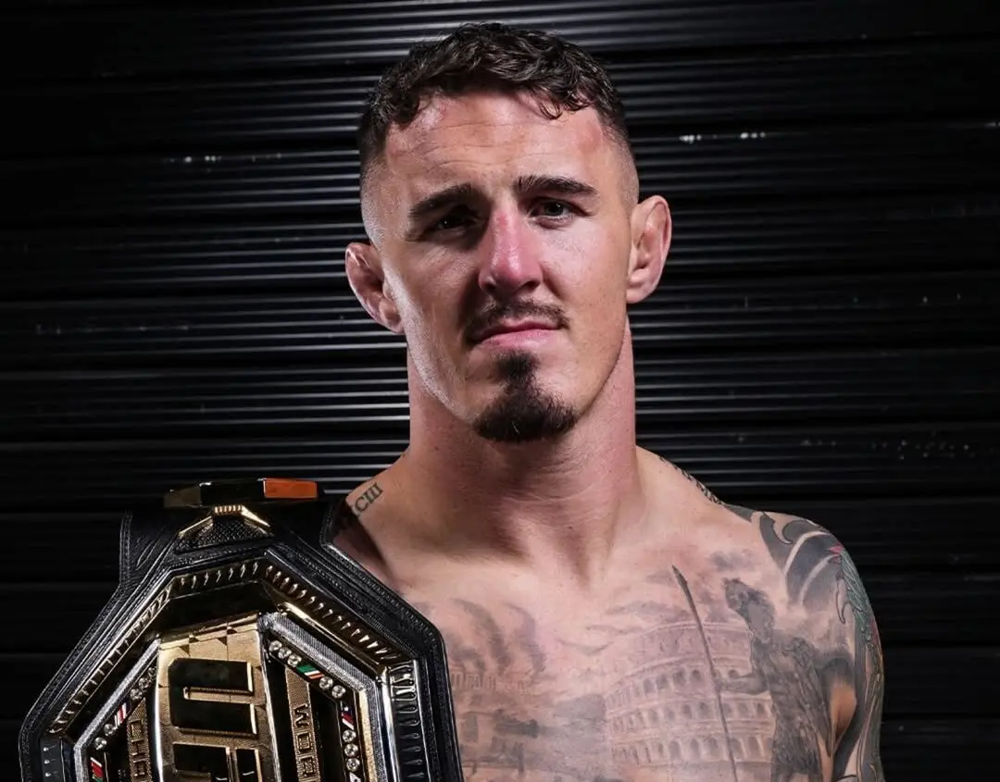
TOM ASPINALL
Tom Aspinall é um dos pesos-pesados mais promissores e técnicos do UFC na atualidade. Conhecido pela agilidade incomum para a categoria, boxe preciso e habilidade no grappling, ele se destaca por finalizar lutas com rapidez e eficiência. Com performances dominantes e evolução constante, Aspinall é visto como um dos principais nomes da nova geração dos pesos-pesados.
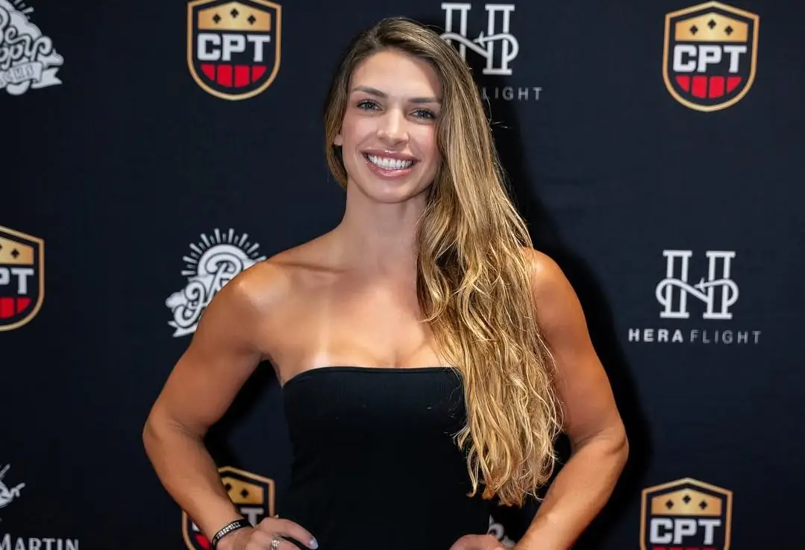
MACKENZIE DERN
Mackenzie Dern é uma das principais especialistas em jiu-jitsu do MMA feminino e uma das atletas mais técnicas do UFC. Conhecida pelo jogo de chão de alto nível, ela acumula diversas finalizações ao longo da carreira. Com evolução na trocação e maior equilíbrio no jogo em pé, Dern se consolidou como um dos grandes nomes da divisão peso-palha.
VALENTINA SHEVCHENKO
Valentina Shevchenko é uma das lutadoras mais completas e dominantes da história do MMA feminino. Ex-campeã peso-mosca do UFC, ela ficou conhecida pela precisão nos golpes, excelente defesa e alto nível técnico em todas as áreas da luta. Com anos de domínio na categoria e performances extremamente consistentes, Shevchenko se consolidou como uma das maiores atletas do esporte.
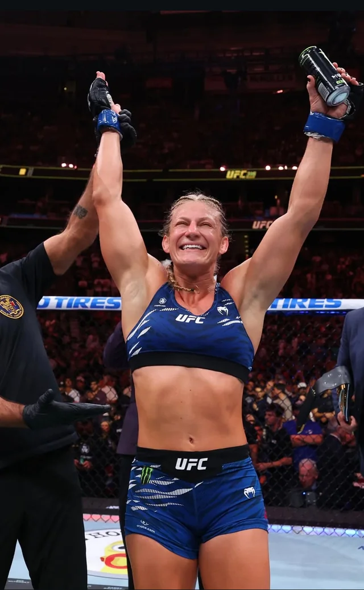
KAYLA HARRISON
Kayla Harrison é uma das atletas mais dominantes do MMA feminino e ex-campeã do PFL. Bicampeã olímpica de judô, ela trouxe para o MMA um jogo de grappling de nível mundial, controlando suas adversárias com força, técnica e pressão constante. Com performances impressionantes e histórico vitorioso, Harrison é considerada uma das lutadoras mais temidas e respeitadas do esporte.